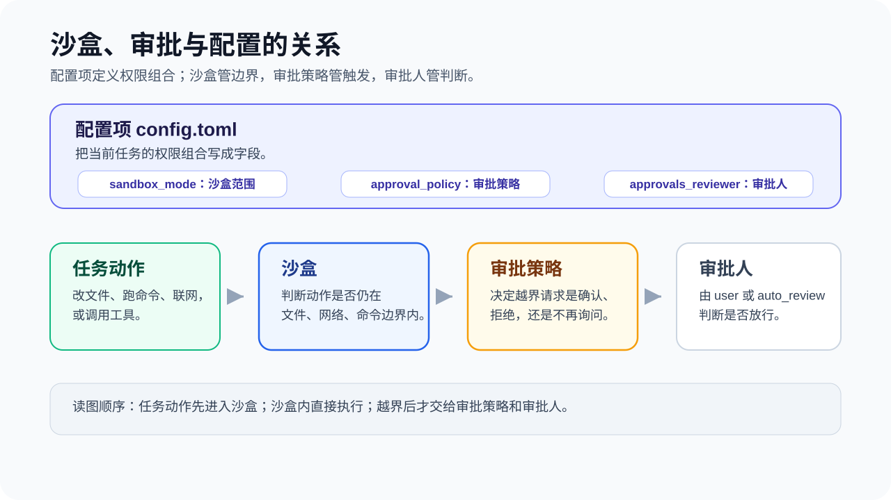

16 进阶与团队
沙盒与审批：Codex 的安全护栏
Codex 能读取代码、修改文件、执行命令。这些操作需要受控边界：哪些目录可写、哪些命令可执行、什么情况下必须暂停并请求确认。
来源：CodexGuide 原文。原页面标注 MIT Licensed；原图与说明按页面内容保留。
沙盒与审批：Codex 的安全护栏
Codex 能读取代码、修改文件、执行命令。这些操作需要受控边界：哪些目录可写、哪些命令可执行、什么情况下必须暂停并请求确认。
沙盒和审批就是这套边界。
对于绝大多数人而言，只需要把 Auto-Reivew 模式打开就够了。本文章旨在让你更好地理解 Codex 的沙盒机制和审批策略，同时补充一些进阶用法。
当你在利用沙盒和权限机制来约束 Codex 行为的时候，你已经在实践 Harness Engineering ，即“约束工程” 。

💡 最后核对 官方资料最后核对日期：2026-06-18。本文依据 Codex Sandboxing、Agent approvals & security、Permissions、Rules、Windows 和 Auto-review 整理。
三个概念
想象 Codex 在你的电脑里工作，就像在一个有玻璃墙和门禁的实验室里操作。
- 沙盒就是实验室的墙和门禁：它规定 Codex 能碰哪些设备、能不能连外网、能不能写入项目外文件夹。墙内的常规操作，Codex 可以自己做；墙外的事情，需要先获得许可。
- 审批策略就是门禁的触发规则：是「沙盒外区域每次请求确认」，还是「只在 Codex 越过沙盒边界时请求确认」，还是「完全不请求，自行处理」。
- 审批人就是谁来回答门禁：你自己看门放行，还是让另一个智能门禁系统（Auto-review）先判断一下。
三者加在一起，决定 Codex 在你的电脑上到底能做什么、不能做什么。
默认推荐
Codex 启动时会根据目录状态自动推荐权限：
- 版本控制目录（带有.git文件夹）：
Auto，也就是workspace-write + on-request。 - 非版本控制目录（不带有.git文件夹）：
read-only。 - 某些情况下，Codex 会先保持
read-only，直到你明确信任当前工作目录。
日常开发最常用的是
- 沙盒设置：workspace write（工作区写入）
- 批准机制：on-request（按请求）
旧版写法（仍可用）：
sandbox_mode = "workspace-write"
approval_policy = "on-request"
approvals_reviewer = "user"
新版 permission profiles 写法（beta）：
default_permissions = ":workspace"
approval_policy = "on-request"
approvals_reviewer = "user"
新旧配置不要混用。 这些配置通常写在
~/.codex/config.toml。如果任意已加载配置里出现sandbox_mode，或命令行传了--sandbox，Codex 会使用旧版 sandbox 设置，而不是default_permissions。
这段话什么意思？用上面的类比解释：
- Codex 可以在当前项目文件夹（workspace）里正常操作：读取文件、修改文件、运行常规的本地命令（比如
git、测试脚本、编译）。 - 如果需要联网、写到项目外面、或者做越界的事情，就会触发审批，暂停并请求确认。
这是官方推荐的默认设置。它不会每一步都要求交互确认，也不会让 Codex 获取整台电脑的权限。
沙盒模式
三种沙盒模式，对应不同的权限边界：
| 模式 | 对应英文 | 范围 | 审批触发条件 |
|---|---|---|---|
| 只读 | read-only / :read-only |
主要用于读文件和回答问题；命令执行也受只读边界限制 | 修改文件、执行需要写入的命令或联网时触发审批 |
| 工作区写入 | workspace-write / :workspace |
可以在项目里读、写、运行常规命令 | 联网或写到项目外时触发审批 |
| 完全访问 | danger-full-access / :danger-full-access |
没有沙盒限制，可以访问任何位置 | 取决于审批策略 |

日常默认用工作区。 它为 Codex 提供足够的操作空间完成普通开发任务，同时守住项目边界。
不要轻易使用完全访问。 它等于拆掉了所有沙盒限制，Codex 可以写入系统文件、访问任意网络。如果正在做删除数据、部署到生产环境或批量修改文件之类的操作，用完全访问会把风险放大。CLI 里的 --dangerously-bypass-approvals-and-sandbox（别名 --yolo）就是这个模式。
另外，即使在「工作区」模式下，下面这些路径也会被只读保护：
.git目录（你的版本控制数据）.agents目录（你的 agents 配置）.codex目录（Codex 自身的配置）
这些路径在默认 workspace-write 策略下是只读保护区。Codex 可以读取它们，但不能直接写入里面的内容。
审批策略
沙盒规定了边界，审批策略决定什么时候 Codex 必须暂停并请求确认。
| 策略 | 触发条件 | 说明 |
|---|---|---|
untrusted（不可信） |
命令不属于已知安全的读取操作 | 只自动执行已知安全的读操作；可能修改状态、触发外部执行路径或危险 Git 操作的命令都需要确认 |
on-failure（失败时） |
命令执行失败时 | 先在当前权限下尝试执行；失败后再请求确认。这个选项在部分 App 配置界面中可见，但不是当前官方文档的默认推荐 |
on-request（按请求） |
操作越过沙盒边界 | 默认推荐。沙盒内自动执行，越界时请求确认 |
never（从不） |
不触发 | Codex 在既有权限内自行处理，不弹出审批 |

on-request（按请求）是新手最友好的选择。 沙盒内自动执行，越界时暂停并请求确认。不需要审批每一个文件修改，只需要在关键时刻把关。
never 不是「自动变安全」。 它只是不请求确认。安全取决于沙盒边界是否足够窄。比如 read-only + never 是安全的，因为 Codex 本来就不能改东西；但 danger-full-access + never 是官方标注的高风险组合——没有沙盒限制，也没人确认。
Auto-review
如果一个命令需要越过沙盒，那么 Codex 就会发起请求。请求除了用户来批准以外，也可以使用 Auto-review 模式自动批准。
Auto-review 相当于：当 Codex 越过沙盒边界时，不是直接呈现给你，而是先交给 reviewer agent 判断。常见的有：
- 写入项目外目录
- 联网请求
- 请求更多权限
- 执行带副作用的 app 或 MCP 工具调用
沙盒内允许的操作，不会经过 Auto-review。 所以它不会改变日常操作的沙盒边界。
Auto-review 不会扩大沙盒边界。它不会扩展 Codex 的 workspace，不会自动给它网络权限，也不会让危险命令绕过沙盒。如果 reviewer agent 判断请求有风险，它会拒绝，Codex 需要选择更安全的替代方案，或者请求确认。
底层配置：
approval_policy = "on-request"
approvals_reviewer = "auto_review"
approval_policy决定什么时候产生审批请求。on-request表示沙盒内操作继续执行，越过沙盒边界时才请求审批。approvals_reviewer决定审批请求交给谁。默认是"user"，即直接呈现给用户；改成"auto_review"后，符合条件的审批请求会先交给 reviewer agent。
这两个字段要一起理解。只写 approvals_reviewer = "auto_review" 不会让 Codex 主动产生更多审批请求；它只是改变已有审批请求的处理人。也就是说，Auto-review 的前提仍然是 approval_policy 处在会产生交互审批的模式，比如 "on-request" 或 granular。
如果你想保留沙盒边界，同时减少手动确认操作，可以这样写：
sandbox_mode = "workspace-write"
approval_policy = "on-request"
approvals_reviewer = "auto_review"
如果你已经改用新版 permission profiles，也可以这样写：
default_permissions = ":workspace"
approval_policy = "on-request"
approvals_reviewer = "auto_review"
更多阅读：Agent approvals & security：Automatic approval reviews。
网络权限
联网能解决问题，也能引入风险。Codex 需要联网时，通常是为了：
- 安装依赖（
npm install、pip install） - 查询信息
- 调用 GitHub API
- 测试时访问本地服务器
但联网也会带来风险：
- 提示词注入：恶意网页可能让 Codex 执行不该执行的命令
- 数据外发：你的代码、密钥、
.env文件可能意外泄露 - 供应链风险：安装的依赖本身可能不安全
所以：
- 如非必要，不要给网络权限。 如果只是修改本地文档，完全不需要联网。
- 搜索资料时，优先用 Codex 内置的受控 web search，而不是让 Codex 直接访问任意网页。
- 需要联网时，让 Codex 说明目标域名和用途，并且确认是访问可信任的网站。
- 永远不要把
.env、token、cookie、私钥交给会联网的命令。
进阶配置
如果你发现 Codex 经常因为沙盒边界过窄而频繁触发审批，推荐使用 Auto-review ，让 Codex 帮你审批，从而减少手动确认次数。
如果对项目安全边界要求很高，或者是处理一些敏感的操作，那么也有一些进阶配置可选：
1. 扩展 workspace（最推荐）
如果 Codex 需要同时修改两个项目目录，比如 ~/project-a 和 ~/project-b，你可以把第二个目录也加入可写范围。这是扩展 workspace，不是拆掉沙盒边界。
旧版写法：在 config.toml 的 sandbox_workspace_write.writable_roots 里添加。
新版写法：在 permissions.<name>.workspace_roots 里添加。
旧版 sandbox 写法适合还在使用 sandbox_mode 的配置：
sandbox_mode = "workspace-write"
approval_policy = "on-request"
[sandbox_workspace_write]
writable_roots = ["~/project-a", "~/project-b"]
network_access = false
新版 permission profiles 写法适合把文件系统和网络边界放在同一个 profile 里。这里的 my-docs-workspace 是自定义 profile 名称，可根据需要命名。
default_permissions = "my-docs-workspace"
approval_policy = "on-request"
[permissions.my-docs-workspace]
extends = ":workspace"
[permissions.my-docs-workspace.workspace_roots]
"~/project-a" = true
"~/project-b" = true
[permissions.my-docs-workspace.filesystem.":workspace_roots"]
"." = "write"
"**/*.env" = "deny"
[permissions.my-docs-workspace.network]
enabled = false
这两个写法二选一。只要已加载配置里出现 sandbox_mode，Codex 就会走旧版 sandbox 设置，而不是 default_permissions。
2. 为常用越界命令设置规则（rules）
Rules 控制的是 Codex 需要在沙盒外运行命令时怎么处理。你可以在 .rules 文件里写 prefix_rule，把某类命令设为 allow、prompt 或 forbidden。规则里可以写 match 和 not_match 做验证，减少误匹配。
3. 自定义 permission profiles（beta）
如果你需要更细的控制——比如「能写代码，但只能访问 GitHub 和 npm，不能访问别的网站」——可以定义一个自定义 profile。也就是上文提及的default_permissions写法。
default_permissions = "workspace-net"
approval_policy = "on-request"
[permissions.workspace-net]
extends = ":workspace"
[permissions.workspace-net.filesystem.":workspace_roots"]
"." = "write"
"**/*.env" = "deny"
[permissions.workspace-net.network]
enabled = true
[permissions.workspace-net.network.domains]
"api.github.com" = "allow"
"registry.npmjs.org" = "allow"
"*.npmjs.org" = "allow"
网络权限一旦开启，最好配合域名规则。"*" 也可以放行公共网络，但它的范围很大，不适合当默认示例。
4. 细粒度审批策略（granular，需手动配置）
如果你只想对特定类型的审批请求分别控制，而不是全部越过沙盒边界的操作都请求确认，可以用 granular 策略。它不在 UI 下拉菜单里，需要手动在 config.toml 里写：
approval_policy = { granular = {
sandbox_approval = true, # 沙盒越界时问
rules = true, # rules 触发时问
mcp_elicitations = true, # MCP elicitation 请求时问
request_permissions = false, # 权限请求自动拒绝
skill_approval = false # skill 脚本审批自动拒绝
} }
这里的 true 表示该类请求保持交互审批；false 表示自动拒绝。它是 on-request 的进阶替代，不是 UI 选项。
更多详情请阅读：Agent approvals & security：granular approval policy。
平台差异
不同系统的沙盒实现不同，但对你来说，用法是一样的：
- macOS：使用系统自带的 Seatbelt 机制，无需额外配置。
- Windows：原生 Windows 有两个版本。
elevated更强，使用独立低权限用户和防火墙；unelevated是回退，使用当前用户的受限令牌。有些公司电脑的策略限制可能只能用unelevated。IDE 里可以设置让 Codex 运行在 WSL2 里，这样用的是 Linux 的沙盒机制。 - Linux / WSL2：需要安装
bubblewrap。如果缺少它，Codex 可能会弹出警告或性能下降。WSL1 从 Codex 0.115 起不再支持。
遇到报错时，记住两点：先检查 Codex 的权限模式设置，再查询对应平台的文档。无需记忆实现细节。
高风险判断
以下情况，建议让 Codex 先说明计划，再决定是否放行：
- 删除文件、批量移动文件、清理目录
- 数据库迁移、修改生产数据
- 修改认证、权限、支付、账单相关代码
- 访问生产服务器或外部 API
- 处理密钥、token、cookie、私有凭据
- 大规模安装或升级依赖
- 执行部署、发布、推送 release
判断标准：
- 有没有不可逆的副作用？（删除后无法恢复）
- 会不会涉及敏感数据？（密钥、用户数据）
- 会不会影响项目外面？（生产环境、别的系统）
如果你不确定，可以在任务开头贴这段提示词，让 Codex 更谨慎：
请在动手前先说明你计划运行的命令和可能影响的文件。不要读取 `.env`、密钥、token、cookie 或任何私有凭据。不要执行删除数据、发布、部署或迁移命令，除非我明确确认。
这段话不能代替沙盒，但能让 Codex 更早说明计划，减少误操作。
团队建议
- 统一配置标准。团队内统一审批策略和沙盒模式。有人用
never+danger-full-access，有人用on-request+workspace-write，发生问题时难以排查。把推荐的配置通知给团队成员，按统一标准执行。 - 配置进版本控制。
.rules、AGENTS.md和 项目级config.toml文件纳入版本控制，克隆仓库后权限一致。 - 敏感数据隔离。生产密钥不放在普通开发环境。用 profile 里的
deny规则把**/*.env和~/.ssh标记为禁区，比依赖人记忆更可靠。 - 高风险操作强制审批。对删除、部署、数据迁移等操作，用
granular或rules强制走审批流程。 - Codex 的改动仍然要 review。沙盒和审批负责边界控制，不负责代码质量。代码改动仍然走正常的 PR 流程。